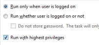

Create / edit a Scheduled Job/Task. The job can be created on the local or a remote computer.
Syntax: Create a new scheduled task: SCHTASKS /Create [Connect_Options] Create_Options /TN taskname Delete the scheduled task(s) SCHTASKS /Delete [Connect_Options] /TN taskname [/F] Display one or all scheduled tasks: SCHTASKS /Query [Connect_Options] [/FO format | /XML] [/NH] [/V] [/TN taskname] Run the scheduled task on demand: SCHTASKS /Run [Connect_Options] /TN taskname Stop the currently running scheduled task: SCHTASKS /End [Connect_Options] /TN taskname Change the properties of scheduled task, Enable or Disable a task: SCHTASKS /Change [Connect_Options] {[/RU username] [/RP password] [/TR taskrun]} /TN taskname [/ST starttime] [/RI interval] [ {/ET endtime | /DU duration} [/K] ] [/SD startdate] [/ED enddate] [/ENABLE | /DISABLE] [/RL level] [/IT] [/Z] Show the security identifier corresponding to a scheduled task name: SCHTASKS /ShowSID [Connect_Options] /TN taskname Connect_Options: /S system # Remote system (default is local) [/U username [/P password]] # Submit job under this name Create_Options: /TN taskname # A name which uniquely identifies the scheduled task. /TR taskrun # Pathname of the executable to run. [/ST starttime] # HH:MM (24 hour) [/RU username [/RP password]] # Run job as this user. /SC schedule # The schedule frequency: MINUTE, HOURLY, DAILY, WEEKLY, MONTHLY, ONCE, ONSTART,ONLOGON,ONIDLE. [/MO modifier] # When to run: MINUTE: 1 - 1439 minutes. HOURLY: 1 - 23 hours. DAILY: 1 - 365 days. WEEKLY: 1 - 52 weeks. ONCE: No modifiers. ONSTART: No modifiers. ONLOGON: No modifiers. ONIDLE: No modifiers. MONTHLY: 1 - 12, or FIRST, SECOND, THIRD, FOURTH, LAST, LASTDAY. ONEVENT: XPath event query string. [/D day] # Day = MON,TUE,WED,THU,FRI,SAT,SUN [/M months] # Month=JAN,FEB,MAR,APR,MAY,JUN,JUL,AUG,SEP,OCT,NOV,DEC. [/I idletime] # 1 - 999 minutes (ONIDLE task only) [/SD startdate] [/ED enddate] # Start / End date in Region specific format e.g. "12/12/2015" [/RI interval] # Repetition Interval in minutes. N/A for schedule types: MINUTE, HOURLY, ONSTART, ONLOGON, ONIDLE, and ONEVENT. If either /ET or /DU is specified, the default is 10 minutes. Range is 1 - 599940 minutes. [/DELAY delaytime] # Specify the wait time to delay the task after the trigger is fired. This option is only valid for schedule types ONSTART, ONLOGON, and ONEVENT. The time format is mmmm:ss. [/EC ChannelName] # Specify the event channel for an ONEVENT trigger. [/RL level] # Set the run level for the task. LIMITED or HIGHEST. Default= LIMITED. [{/ET endtime | /DU duration} ] # End time/Duration to run as HH:mm (24-hour time). e.g. 14:50 [/F] # Force, create the task and suppress warnings if the specified task already exists. [/K] # Kill/Terminate the task at the end time or duration time. N/A for schedule types: ONSTART, ONLOGON, ONIDLE, and ONEVENT. Either /ET or /DU must be specified. [/NP] # No password is stored. The task will not run interactively as the given user. Only local resources are available. [/XML xmlfile] # Create a task from an XML file. (These are found in the 'Tasks' folder) This can be combined with /RU and /RP switches, or with the /RP switch alone when the task XML already contains the principal. [/V1]] # Create a task visible to Windows 2000, 2003, and XP. [/IT] # Interactive, enable the task to run interactively only if /RU user is currently logged on at the time the task runs. The task runs only if the user is logged on. [/Z] # Deletedthe task after its final run. Query Options: /FO Output format: TABLE, LIST, CSV /NH No header /V Verbose output
For MONTHLY schedules give the DAY as a number 1 - 31 (default=1)
To prompt for the password, specify /RP * or /RP noneThe User Account under which the Schedule service runs will require specific file access permissions, user permissions and drive mappings.
If the /RU username and /RP Password parameters match the currently logged-in user, the task will run interactively (visible in the foreground).
For the system account, /RU username can be written as "", "NT AUTHORITY\SYSTEM" or "SYSTEM", a Password is not required. The system account has full access to the local machine but has no permissions on any other machines (or mapped drives) across the Network.The new task must be set to start a minimum of 1 minute into the future. The /SC option is a little inconsistent, under Windows XP it requires an HH:MM:SS value, under Vista and greater it will accept HH:MM but in all cases the SS value in seconds will be ignored and rounded down.
SCHTASKS.exe is limited to commands with less than 255 characters and does not have access to all of Scheduler 2.0 options such as "Wake up the machine to run this task".
These additional options are available via the GUI or by using the Task Scheduler PowerShell cmdlets.
If a scheduled task invokes a UAC prompt, then the task will fail to run unattended.
To prevent this make sure that you select the 'Run With Highest Privileges' check box:
If you are running a non-english language version of Windows then the Days and Months accepted by SCHTASKS might be localised.
e.g. Italian days: lun, mar, mer, gio, ven, sab, dom Italian months: gen, feb, mar, apr, mag, giu, lug, set, ott, nov, dic.
Examples:
Create a task to run at 11 pm every weekday
SCHTASKS /Create /SC weekly /D MON,TUE,WED,THU,FRI /TN MyDailyBackup /ST 23:00 /TR c:\backup.cmd /RU MyDomain\MyLogin /RP MyPassword
Now delete the task:
SCHTASKS /Delete /TN "MyDailyBackup" /f
Create a one-off task to run a script at exactly12 midday:
SCHTASKS /create /tn "once only" /tr "\"c:\my folder\one.cmd\" arguments" /sc ONCE /sd 12/29/2014 /st 12:00
Create a daily task to run a script at 5 pm:
SCHTASKS /create /tn "My Script" /tr "\"c:\my folder\script.cmd\" arguments" /sc daily /sd 12/29/2014 /st 17:00
Create a task ready to run on demand - this is done by creating a task scheduled far in the past:
SCHTASKS /create /tn "On demand demo" /tr "C:\Windows\notepad.exe" /sc ONCE /sd 01/01/1910 /st 00:00
Task Scheduler options are stored in the registry
HKLM\SOFTWARE\Microsoft\SchedulingAgent\
“We don’t wake up for less than $10,000 a day” ~ Linda Evangelista
Related:
Q823093 - Scheduled task does not run when the Path contains a space
WAITFOR - Wait for or send a signal.
POWERCFG /WakeTimers - Configure power settings, list wake timers.
PowerShell: To schedule a PowerShell script or task call Powershell.exe
Equivalent bash command (linux):
crontab - Schedule a command to run at a later time